逐秒帧附录 · 玩法架构证据图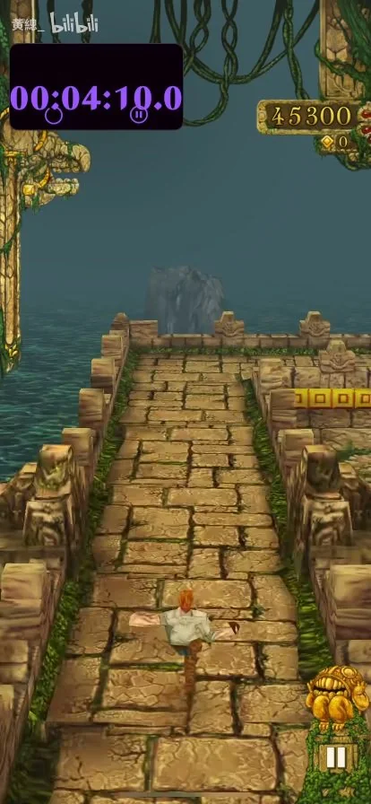
252s · 石桥
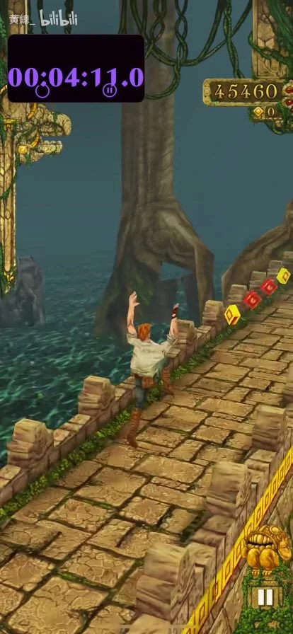
253s · 石桥
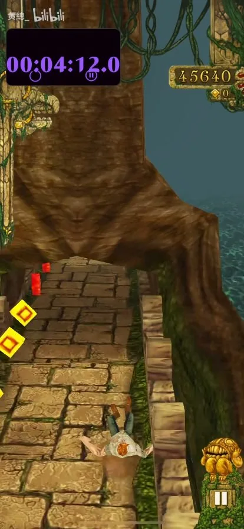
254s · 石桥
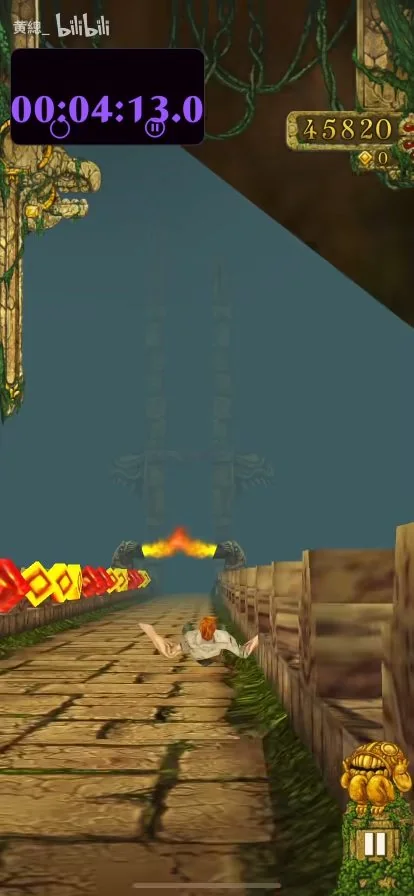
255s · 石桥
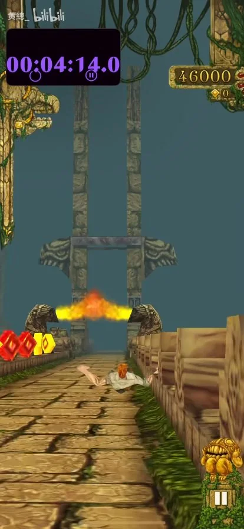
256s · 石桥
 257s · 石桥
257s · 石桥
石桥喷火横障。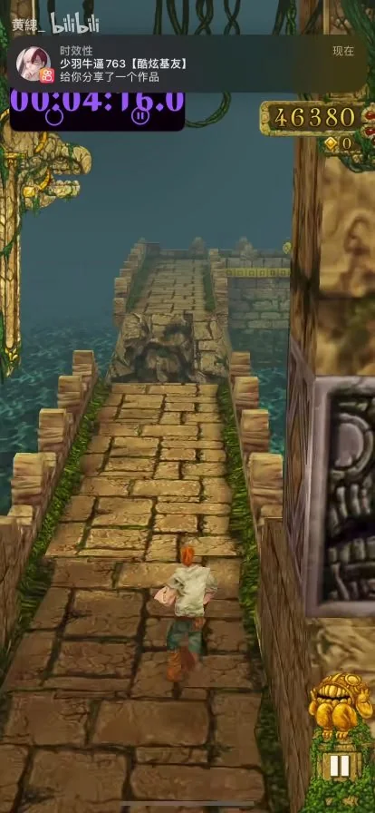
258s · 石桥
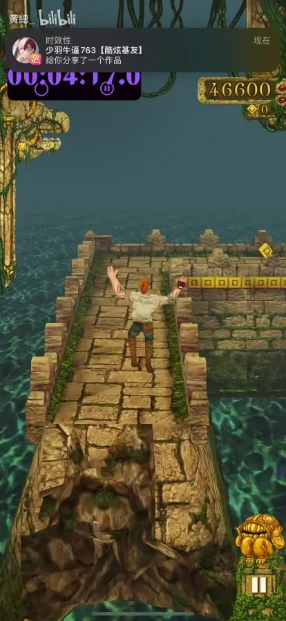
259s · 石桥
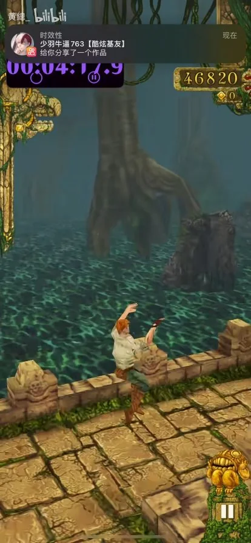
260s · 石桥
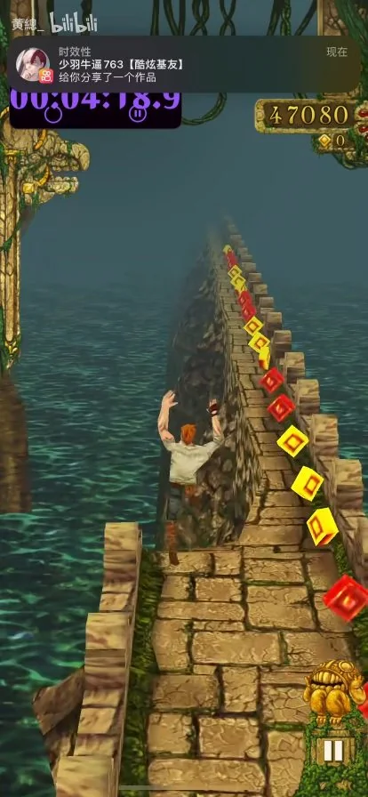
261s · 石桥
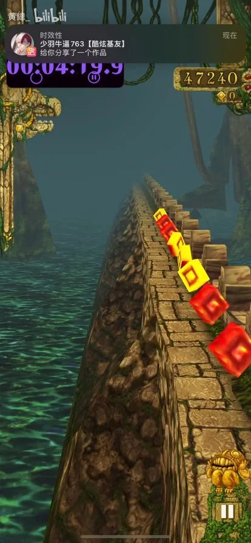
262s · 石桥
 263s · 结算
263s · 结算
结算面板：47240 分；计时 4:20.9。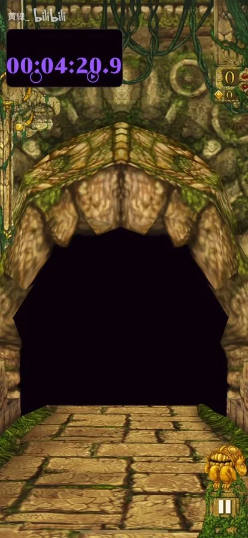
264s · 结尾 / 重开
 265s · 结尾 / 重开
265s · 结尾 / 重开
再次出现兽口神庙入口。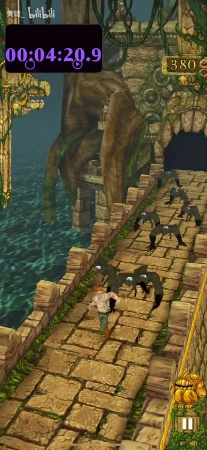
266s · 结尾 / 重开
重开后的追逐镜头。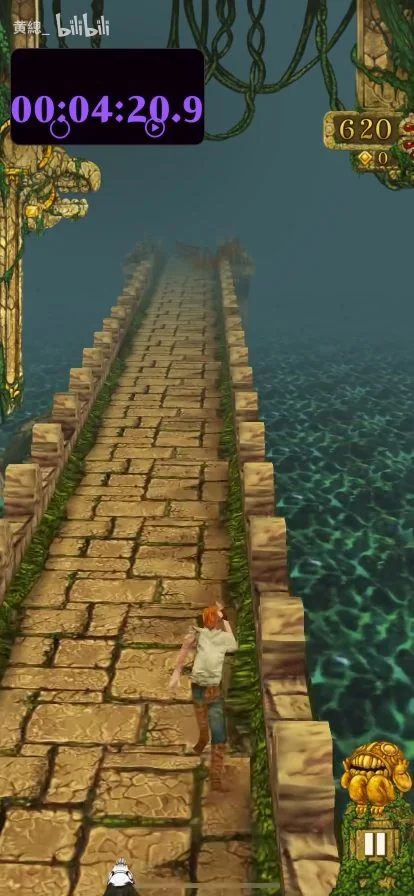
267s · 结尾 / 重开
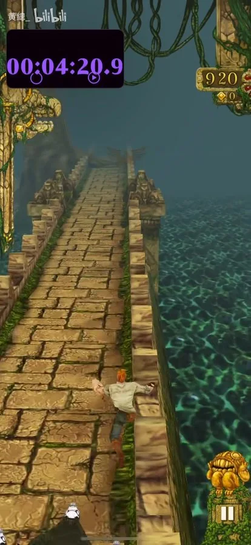
268s · 结尾 / 重开
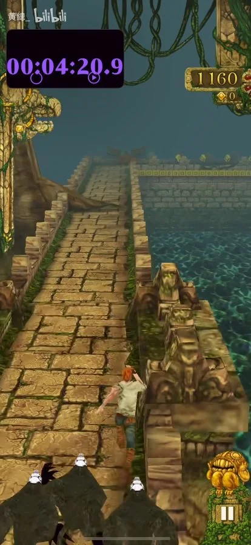
269s · 结尾 / 重开